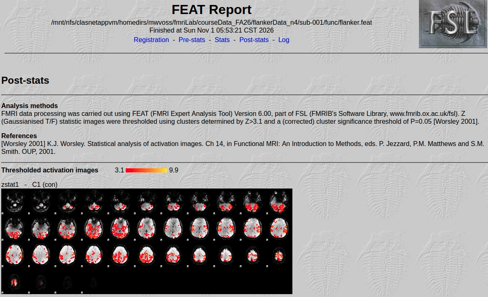

By the end of this practical you should be able to:
* [ ] identify the two nifti images that are INPUT to the task analsysis
* [ ] set up preprocessing in the FEAT GUI
* [ ] create and understand a model of task-related BOLD signal in the FEAT GUI
* [ ] understand how to test for activation differences between conditions
* [ ] locate and view the activation maps in fsleyes
Open the FEAT GUI from the flanker data directory:
* Open the terminal and type cd fmriLab/courseData_FA26/flankerData_n4
* In terminal type fsl and click on FEAT FMRI analysis
Data tab in FEAT GUI:
* On the Data tab, click Select 4D data and select your subject's fMRI flanker data
* For example, subject sub-001's functional flanker data is in the func folder and named sub-001_task-flanker_bold.nii.gz
* Set the Output directory as that subject's func folder. Do this by clicking on the yellow folder and selecting their func folder.
* Name your output folder flanker.feat like the example below
* Do not delete volumes or change the high-pass filter
Pre-stats tab in FEAT GUI:
* Keep MCFLIRT on with the default reference volume
* Keep slice-timing as None here
* Keep BET brain extraction on for the functional data (yellow box means 'on')
* Set spatial smoothing to 6 mm
* Keep the highpass filter on
* Do not turn on MELODIC ICA data exploration
Registration tab in FEAT GUI:
* Select Main structural image to open that window
* Set your skull-stripped _brain image that you skull-stripped as the main structural image
* Change search options to Full search and 12 DOF
Setting up task model in the Stats Tab in the FEAT GUI:
-
Move to the
Statstab, first turn onAdd additional confound EVsand then select theoutliers.txtfile in yourbehfolder as shown:
-
Next, click on
Full model setup. Set up your model using tabs for each explanatory variable (EV) like shown below:
EV1:
EV2:
EV3:
EV4:
- After setting up the EVs, stay in the
Full model setupwindow and go to theContrasts & F-teststab. Set up the contrasts as below. ClickDonewhen setup complete.
- After completing the
Full model setupyou will get your task model!
- The last tab in the FEAT GUI is
Post-stats. We will leave the defaults on for now. The settings here are most relevant when we get to group-level analyses.
- Click
Go. When it's finished, the results will appear within yourflanker.featdirectory. Your html report will then include output of brain activation maps as previewed below.

Lab: First-Level fMRI Analysis — Quality Control
Learning Objectives
After completing your first-level analysis in FSL FEAT, you will evaluate the quality of your results by examining:
- Registration: Are the functional and anatomical images aligned correctly?
- Pre-stats: Is head motion likely to compromise the analysis?
- Post-stats: Do the statistical activation maps appear plausible and interpretable?
The goal is to learn how to distinguish a successful analysis from one that technically completed but may have quality problems.
Instructions
Open the HTML report generated by your first-level FEAT analysis. Work through the checklist below.
For each section:
- Check each item after inspecting the relevant figure.
- Give the section an overall rating: Pass, Questionable, or Fail.
- Briefly explain your assessment using observations from the report.
1. Registration
Question: Are the functional, anatomical, and standard-space images aligned correctly?
Checklist
- Functional to high-resolution (example_func2highres): Do the outer borders of the brain and major anatomical features align?
- High-resolution to standard (highres2standard): Do the ventricles align reasonably well? Are the outer borders of the brain aligned?
- Functional to standard (example_func2standard): Does the functional image appear to be in the correct anatomical location in standard space?
What to look for
- The overall shape and borders of the brain should align.
- The ventricles are useful landmarks for evaluating anatomical registration.
- Small differences are expected, especially because functional images have lower spatial resolution.
- Large shifts, rotations, or anatomical structures that do not line up are concerning.
Overall assessment: Pass / Questionable / Fail
Your observations: Describe any misalignment you observe. Is it minor or severe?
2. Pre-stats: Head Motion
Question: Is head motion likely to compromise the analysis?
Your functional voxel dimensions are 3.5 × 3.5 × 4 mm.
Checklist
- Inspect the motion plots: Focus on the bottom graph, which shows estimated head displacement in millimeters (mm).
- Check the magnitude of motion: Approximately how large is the maximum displacement?
- Compare motion with voxel dimensions: Is the displacement small or large relative to the dimensions of a voxel?
- Look for sudden changes: Are there large spikes or abrupt changes in head position?
- Consider overall motion: Does movement occur throughout the scan, or is it limited to a few time points?
What to look for
- Motion is measured in millimeters, so you can compare it with the dimensions of your functional voxels.
- Movement of 3.5 mm is approximately the width of one voxel in the x/y plane.
- Even movement smaller than one voxel can affect fMRI results.
- Sudden movements and repeated motion spikes are especially concerning.
- Movement that occurs systematically during one task condition can create misleading activation patterns.
Important: There is no single motion threshold that guarantees good or bad data. Consider both the magnitude and pattern of movement.
Overall assessment: Pass / Questionable / Fail
Your observations:
- What is the approximate maximum displacement in mm?
- How does this compare with the voxel dimensions?
- Would you be concerned about this participant's motion? Why or why not?
3. Post-stats: Statistical Activation Maps
Question: Do the statistical maps appear plausible and interpretable?
The Post-stats section displays statistical activation maps for each condition and comparisons between conditions.
Checklist
- Inspect all statistical maps: Are maps present for each condition and comparison?
- Look for blank brains: Are any statistical maps completely blank (no significant activation)?
- Look for border activation: Do you see widespread activation along the outer edges of the brain, sometimes called a "ring of fire"?
- Look for unusual spatial patterns: Do you see straight lines, stripes, or other patterns that do not resemble plausible brain activation?
- Consider anatomical plausibility: Are significant clusters located within brain tissue and in regions that make sense for the task?
What to look for
Plausible activation patterns:
- Clusters located within brain tissue.
- Spatial patterns that are reasonably consistent with the cognitive task.
- Activation that is not dominated by the edges of the brain or obvious image artifacts.
Potential warning signs:
- Widespread activation around the outer border of the brain ("ring of fire").
- Straight lines, stripes, or unusual geometric patterns.
- Large clusters that appear to extend outside brain tissue.
- Activation patterns that appear dominated by motion or other artifacts.
Important: A blank statistical map does not necessarily mean the analysis failed. It may mean that no voxels survived the statistical threshold for that contrast.
Likewise, statistically significant activation does not guarantee that the signal reflects genuine neural activity.
Overall assessment: Pass / Questionable / Fail
Your observations:
- Which statistical map shows the most convincing activation pattern? Why?
- Are any maps blank or suspicious?
- Do you see evidence of motion contamination or other artifacts?
4. Final Quality-Control Assessment
After reviewing all three sections, consider the overall quality of the analysis.
| FEAT section | Pass | Questionable | Fail |
|---|---|---|---|
| Registration | [ ] | [ ] | [ ] |
| Pre-stats: Motion | [ ] | [ ] | [ ] |
| Post-stats: Activation | [ ] | [ ] | [ ] |
Reflection Questions
1. Would you include this participant's first-level analysis in a group-level analysis?
Explain your decision using evidence from registration, motion, and activation maps.
2. Which quality-control finding concerns you most, and why?
Consider how it could affect interpretation of the statistical results.
3. Can an analysis complete successfully in FEAT but still produce invalid or misleading results?
Give one example from the FEAT report.
Key Takeaway
A successful FEAT analysis is not necessarily a high-quality analysis.
Quality control helps us determine whether the statistical results are trustworthy and whether they can be interpreted as meaningful brain activity.
- Once you've completed all the steps above for
sub-001, repeat forsub-002andsub-003andsub-004. Example PDFs for their FEAT activation reports will be on our course ICON site. Before next class, you should have statistical maps for the same contrasts, in the SAME order, for all subjects.